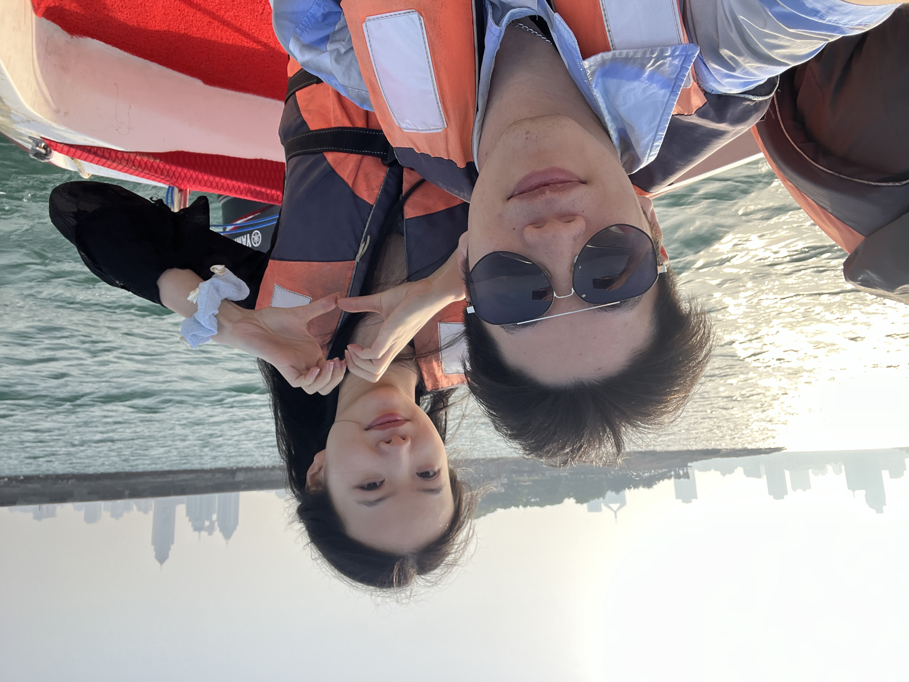

2020年4月5日
初次心动
我们第一次一起坐过山车。你在过山车上紧紧拉着我的袖口，那一刻，我感受到了你的依赖和信任。惊险的旅程中，有你在身侧，心跳加速的不只是过山车，更是我对你的心动。

2024年5月
青岛之夏

我们去了青岛，感受海风拂面的舒适。蔚蓝的天空，洁白的浪花，与你相依沙滩漫步，所有的风景都因为你的存在而更加迷人。
2024年12月
峨眉雪景
冬日的峨眉山银装素裹，我们手牵手走在雪地中。寒冷的天气抵挡不住内心的温暖。与你一起看雪，是我一直以来的愿望。

2025年
新的征程
2025年，我们即将开启新的旅程，第一站是贵阳。未来的日子里，我希望和你一起走过更多的地方，创造属于我们的故事。